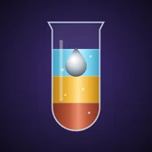
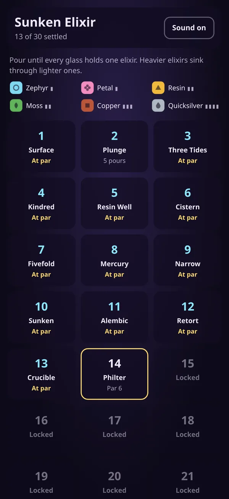
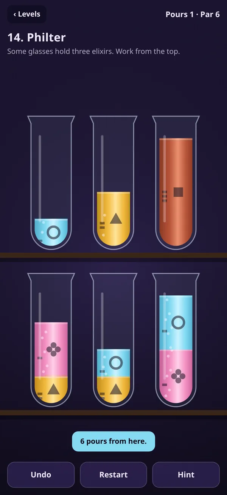
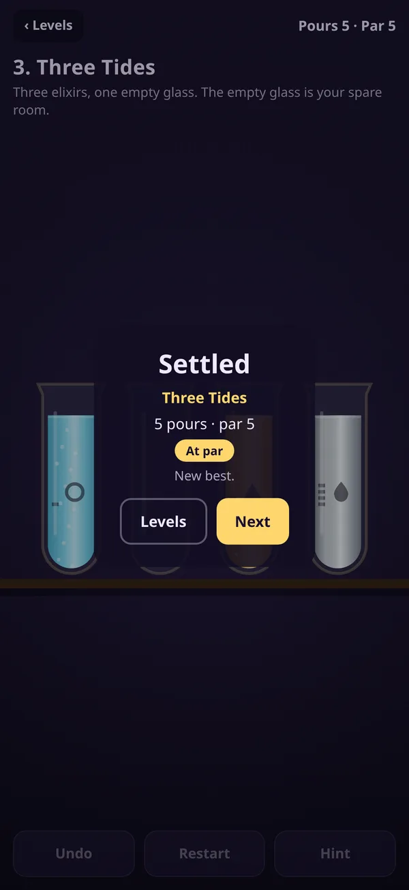

Sunken Elixir
A sorting puzzle with weight.
An alchemist's shelf, a row of glasses and six elixirs that won't stay put. Pour the top elixir from one glass into another. If it's heavier than what's below, it sinks straight through to its place. Plan for the sink and a messy rack settles in a few clean pours.
In development, coming to the App Store


What's inside
30 levels
From three gentle elixirs up to six-elixir shelves with a single spare glass. Every par is the shortest possible solution.
Weight that matters
Quicksilver drops to the bottom of anything. Zephyr floats on everything. Same-weight elixirs refuse to pass each other.
Hint, undo, restart
Hint shows the next pour from wherever you are, or tells you when a rack can no longer be finished.
- ControlsTap a glass, tap where to pour
- AccessibilityA symbol and weight marks on every elixir
- OnlinePlays fully offline
- PrivacyNo ads, no account, no tracking
Privacy
Last updated November 2026.
What we collect
Nothing. Sunken Elixir has no accounts, no ads and no analytics, and it never connects to the internet. Your solved levels, fewest pours and sound setting are saved on your device and never sent to us.
Children
The game doesn't collect personal information from anyone, including children.
Changes
If a future version adds anything that collects data, we'll update this page and the App Store privacy details first.
Support
Email support@clarkestudios.com
Tell us your device and what happened. A real person reads every message, usually within two business days.
How do I pour?
Tap a glass to pick it up, then tap the glass you want to pour into. The top elixir pours if there is room.
Why did my elixir sink?
Heavier elixirs sink below lighter ones. The bars beside each symbol show its weight: more bars, heavier.
I'm stuck
Tap Hint. It shows the next pour from where you are, or tells you to restart if the rack can no longer be finished. Undo takes back as many pours as you like.